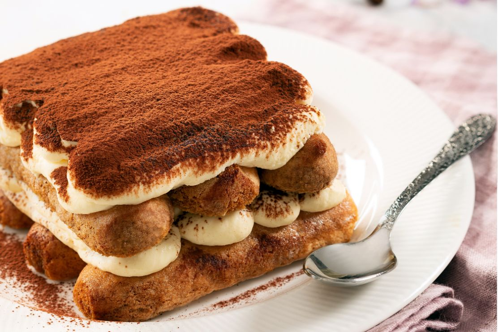

How to make Tiramisu

Dish description
Tiramisu is a layered, no-bake Italian dessert that balances elegance and comfort, known for its blend of creamy richness, subtle bitterness,
and a touch of alcohol warmth. Originating in the Veneto or Friuli Venezia Giulia regions of Italy in the 1960s or 70s (debated by historians),
tiramisu embodies the Italian culinary philosophy of transforming simple, high-quality ingredients into something deeply satisfying.
Ingredients
- Mascarpone cheese - 750 g
- Coffee - 300 g
- Ladyfingers - 250 g
- Sugar - 120 g
- Fresh eggs - 5
- Cocoa powder
Steps
- Make coffee with a mocha, pour it into a bowl, and let it cool down
- Break the eggs and seprate the whites from the egg yolks
- Whip the egg yolks and add half of the sugar
- Once the obtained compound is spumy and homogeneous, slowly start to add the mascarpone cheese
- After adding all the cheese you should obtain a dense, compact cream. Set it aside for the moment
- Now clean the whips and start whiping the egg whites. Once they begin to get foamy, add the remaining sugar
- Add the egg whites to the compound previously obtained and slowly mix them with gentle strokes until obtaining a uniform cream
- Take a baking dish and compose the first tiramisu layer by soaking the ladyfingers in coffe and covering them with abundant cream
- Repeat this process as many times as you wish, increasing the number of layers
- Once the last layer has been formed, cover it with a thin layer of cocoa powder
- Put the tiramisu in the fridge and let it rest for at least six hours before serving
Return to Homepage